| These examples illustrate teh way in which similarity dimension
represents how thoroughly a fractal fills up the space it inhabits. These are relatives of
the Koch curve. Each consists of N = 4 pieces, all scaled by the same factor r,
and so having similarity dimension |
| ds = Log(4)/Log(1/r) |
| Given the desired value of ds, 1.0, 1.1, ... 1.9, 2.0 for these examples,
we can find the value of r for the IFS program to generate the Koch curve by
solving the similarity dimension equation for r: |
| r = 4-1/ds |
| 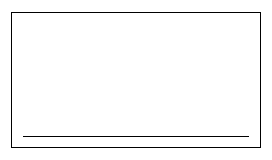 | | d = 1.0 |
| 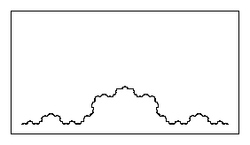 | | d = 1.1 |
| 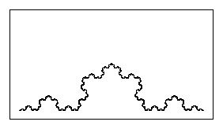 | | d = 1.2 |
| 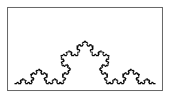 | | d = 1.3 |
| 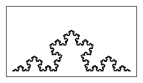 | | d = 1.4 |
| 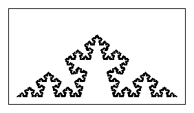 | | d = 1.5 |
| 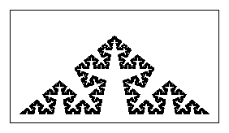 | | d = 1.6 |
| 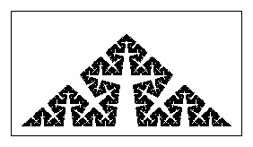 | | d = 1.7 |
| 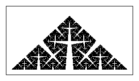 | | d = 1.8 |
| 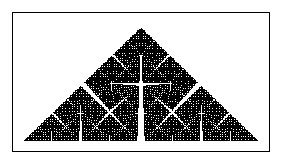 | | d = 1.9 |
| 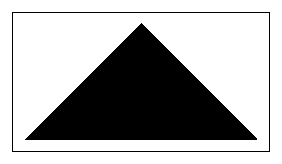 | | d = 2.0 |
|
|